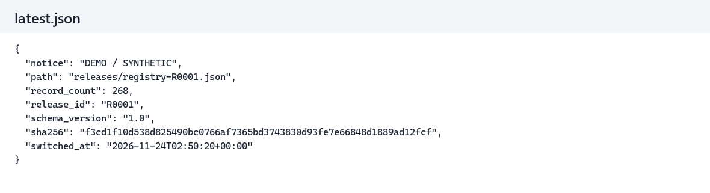
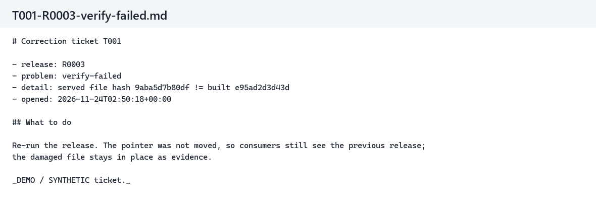
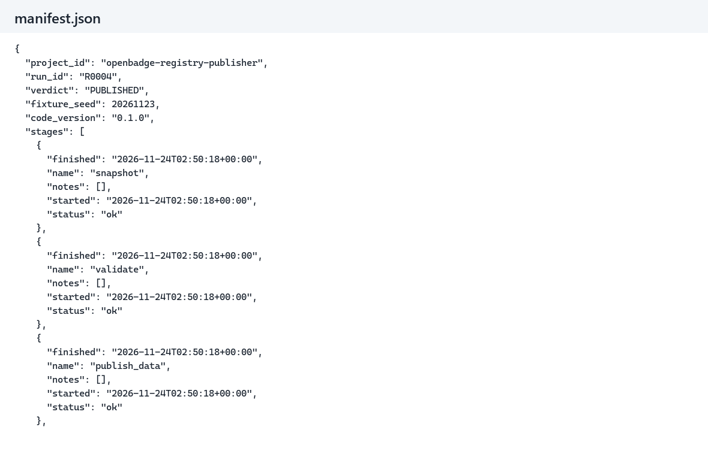

OpenBadge Registry Publisher
A public data file that only goes live after it has been fetched back and proven identical.
Think of a school website with a list of every student's certificates that other schools download. If a certificate is listed twice, or the file gets cut off while uploading, every school downloads the broken list. OpenBadge publishes that list for an invented academy. It checks the list, uploads it as a new dated file next to the old ones, downloads it again to make sure it arrived perfectly, and only then changes the sign that says "this is the latest list". If anything is wrong, the sign keeps pointing at yesterday's list.
The flow, step by step
See it work
OpenBadge builds a public JSON registry of the badges learners hold. The file is written canonically - sorted keys, fixed spacing - so the same data always has the same SHA-256. Three layers of checks run: a JSON Schema for shape, rules for meaning like unique ids and real dates, and a comparison with the live release that blocks if more than 20% of badges would vanish. A passing release is written as a new dated file that is never overwritten, fetched back over HTTP from a local server and compared byte for byte, and only then does the latest.json pointer move. The outside catalogue's import is tracked separately as pending, accepted or rejected, and rollback only goes to a release that verified and still matches its hash.
Narrated, replayed from a real run (4.4 s of computing).
Step through the run, scene by scenePredict each scene, then reveal what the real run printed and which rows changed
Experiment with it
The safeguard switch is in the flow above. These go further: change the data, or ask its database a question.
Break the data on purpose (2)Change one thing in the input and see only what the pipeline did differently
Give a badge an expiry date before it was issued
The first badge in the database is made to expire on 1 January 2020, years before it was issued.
Issue a badge of a type that does not exist
The first badge's type is changed to GLASS-WIZARD, which is not in the badge_type table.
Query the data with SQLThe pipeline's real database opens in your browser, with example questions
The real database a run of this pipeline left behind (registry.sqlite, 88 KB), opened in your browser - nothing to install, nothing sent anywhere. Each example teaches one SQL idea; hover it to see which.
For the detail
Why it is built this way5 design decisions and what was chosen instead
Canonical JSON
instead of: Whatever format the library producesIdentical data must produce identical bytes, or the hash cannot tell you whether the content changed.
Verify by downloading over HTTP
instead of: Checking the file exists on diskConsumers download it. A file can exist and still be truncated, or be served wrongly; fetching it is the only proof that matches what they get.
Move a small pointer, never rewrite the data file
instead of: Overwriting registry.json in placeReaders switch from the whole old version to the whole new one in one step, and rollback is just moving the pointer back.
Track technical and business acceptance separately
instead of: One statusA file can be perfectly published and still be rejected or queued by the consumer. Mixing the two hides which team must act.
Block if more than 20% of badges disappear
instead of: Publishing whatever the data saysA sudden mass removal is usually an upstream mistake; making someone confirm it with --accept-drop is cheaper than a wrong public file.
What goes wrong, and what happens4 situations
| situation | what the pipeline does |
|---|---|
| A badge listed twice, or a 30 February date | Blocked; each finding names the badge; nothing is published. |
| The upload is cut off half way | The hash check fails, the pointer stays on the previous release, a ticket opens. |
| Someone deletes the live file | The consumer rejects the import as missing_target; rollback to the last verified release recovers. |
| Rollback is asked to go to a release that never verified | Refused. |
The data modelTables, keys and links, read from the project's own migrations
Blue marks a primary key; amber arrows are foreign keys - links the database itself enforces.
badge_type
- code text pk
- label text
- validity_days integer
learner
- learner_id text pk
- alias text
- unique (alias)
badge
- row_id integer pk
- badge_id text
- learner_id text → learner.learner_id
- badge_type text → badge_type.code
- issue_date text
- expiry_date text
- status text
registry_release
- release_id text pk
- payload_path text
- sha256 text
- record_count integer
- technical_status text
- consumer_status text
- created_at text
- findings_json text
pointer_history
- pointer_id integer pk
- release_id text → registry_release.release_id
- switched_at text
- reason text
consumer_result
- result_id integer pk
- release_id text → registry_release.release_id
- verdict text
- reason text
- checked_at text
What it producedReal outputs from the recorded run: PDFs, Excel, Word, JSON



Questions it answers4 questions, a short answer and a deeper one
In shortBecause if the new one is broken, everyone gets the broken one and the good one is gone.
In depthImmutable versioned files plus a pointer give atomic switch-over and trivial rollback; overwriting loses both.
In shortThe program downloads it back and checks its fingerprint matches exactly what it built.
In depthHTTP GET from a local server, status 200, SHA-256 equality, record count and sample-record comparison before the pointer write.
In shortAlways writing the file the same way, so the same data always gives the same fingerprint.
In depthsort_keys, fixed separators, UTF-8, trailing newline; makes content hashing meaningful and diffs stable.
In shortVerified means we published it correctly; accepted means the other side imported it.
In depthtechnical_status vs consumer_status on registry_release; consumer_result logs every import attempt.
Run it yourselfOne command sets everything up
python start.py # sets up and opens the CivicWorks Lab cd openbadge-registry-publisher && python -m openbadge demo # or just this demo python -m pytest # its 14 tests